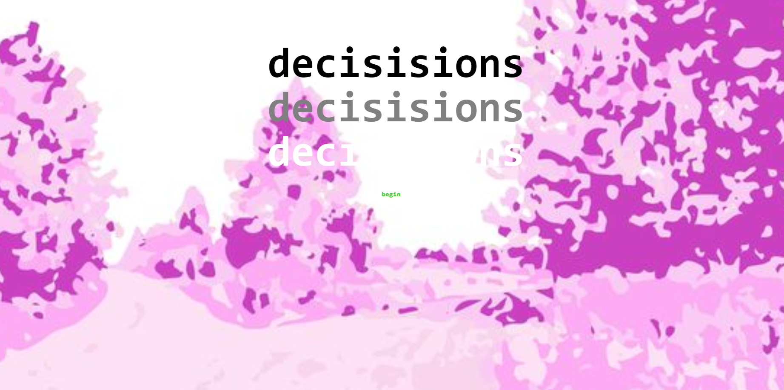

Jaden
I created this piece out of my respect and admiration for Jaden Smith. He is a positive influence and role
model for the youth today, who can show them to be
unapologetically true to themselves. Through this piece, I wanted to convey the impact that Jaden has
created on the world through music, the I Love You Restaurant, and JUST.
2020. Adobe Illustrator and Photoshop.

Disney Dream
With the pandemic at hand, many places that would usually be frequented by many people are out of reach-
like Disneyand. The glitching in this photo means to represent all the plans, ideas, and adventures
that have been corrupted and ruined because of the virus, making them impossible and out of reach for
an unknown amount of time.
2020. Audacity & Adobe Photoshop.

Decision
As someone who has always been interested in criminology, thrillers,
and murder mysteries, this was a huge inspiration and driving force behind this piece. This game
revolves around you, the player, who has to decide what actions to take after witnessing a woman’s
motorcycle being stolen. One thing leads to another, which leads you to make an ultimate decision-
one of life and death. I wanted to give the user a fun and interactive game that would keep them on
their toes and engaged throughout. Along with the thrilling plot, I decided to visually enforce the
game with background images that correlate to the location of each passage (which I got off of Google
Images and edited in Adobe Illustrator). While the subject matter of the game is a bit heavy and dark,
the aesthetic and visuals are bright and light, creating an intended contrast and irony.
Feel free
to click the link above to run through and check out the game.
2020. Twine Game.

Thee Backyard Fairyscape
Being stuck at home for 8 monthes, there weren't many places I could escape to or new places for
me to see or explore. One thing that has captivated me during this time at home has been the sky. It changes every
hour of the day, is infinite, and can convey different moods. This piece captures how the sky, and nature in general,
can have a serenic effect on us a mortal and finite beings. The gradients, color scheme, and
soft brush strokes add to the magical and fictional aura the piece exudes as a way to put the viewer into
a calming, far away, and dream enduced haze.
2020. Adobe Illustrator and Photoshop.
© Catherine Thy Le. All Rights Reserved.